🌿 1. Thảo Nguyên Bốn Mùa Hoa Của Tây Bắc
Nằm ở cửa ngõ vùng Tây Bắc hùng vĩ, Mộc Châu sở hữu địa hình thảo nguyên karst bằng phẳng hiếm có của Việt Nam. Nhờ độ cao hơn một nghìn mét và được che chắn bởi các dãy núi đá vôi trùng điệp, Mộc Châu có khí hậu ôn đới gió mùa mát mẻ quanh năm, nhiệt độ trung bình chỉ từ 18°C đến 20°C. Đây là miền đất độc đáo "mùa nào thức nấy", mỗi mùa trong năm lại khoác lên mình một tấm áo sắc màu riêng biệt làm say đắm bước chân lữ khách.
Mỗi độ đông về sang xuân, cao nguyên lại thay áo mới: tháng 11 rực rỡ sắc trắng tinh khôi của bạt ngàn hoa cải trắng và vàng ruộm hoa dã quỳ; tháng 12 đến tháng 2 là mùa hoa mận, hoa mơ nở trắng xóa khắp các thung lũng Nà Ka, Mu Náu như tuyết phủ; sang hè là mùa trĩu quả của những vườn mận hậu bạt ngàn; thu sang là sắc cam rực của vườn hồng chín mọng. Với cung đường Quốc lộ 6 êm thuận, Mộc Châu là điểm hẹn du lịch nghỉ dưỡng trứ danh bậc nhất Tây Bắc.
🏛️ 2. Vị Trí Địa Lý & Dấu Ấn Lịch Sử Bản Mường
Huyện Mộc Châu nằm ở phía Đông Nam tỉnh Sơn La, cách trung tâm Thủ đô Hà Nội khoảng 190km dọc theo tuyến Quốc lộ 6 huyết mạch. Vùng đất này có vị trí chiến lược đặc biệt quan trọng về quốc phòng - an ninh với hơn 40km đường biên giới tiếp giáp nước bạn Lào.
Về mặt lịch sử, Mộc Châu là vùng đất giàu truyền thống cách mạng. Ngày 8/4/1958, Nông trường Quân đội Mộc Châu chính thức được thành lập theo quyết định của Bộ Quốc phòng, nòng cốt là các chiến sĩ Trung đoàn 280 (Sư đoàn 335) tình nguyện quân Tây Bắc và Thượng Lào hoàn thành nhiệm vụ kháng chiến trở về bắt tay vào công cuộc khai hoang, biến thảo nguyên hoang vu thành thủ phủ chè và chăn nuôi bò sữa nức tiếng cả nước. Ngày 8/5/1959, Chủ tịch Hồ Chí Minh cùng đoàn công tác Trung ương đã lên thăm đồng bào các dân tộc Tây Bắc và cán bộ công nhân viên nông trường Mộc Châu, để lại 16 chữ vàng lịch sử: "Luôn luôn cố gắng / Khắc phục khó khăn / Tiến bộ không ngừng / Làm tròn nhiệm vụ".
📜 Cơ sở dữ liệu pháp lý & Quyết định xếp hạng của Nhà nước Việt Nam:
- Quy hoạch Khu du lịch Quốc gia Mộc Châu: Phê duyệt theo Quyết định số 2050/QĐ-TTg ngày 12/11/2014 của Thủ tướng Chính phủ về Quy hoạch tổng thể phát triển Khu du lịch quốc gia Mộc Châu, tỉnh Sơn La.
- Công nhận Khu du lịch Quốc gia: Chính thức công nhận theo Quyết định số 544/QĐ-BVHTTDL ngày 18/5/2024 của Bộ trưởng Bộ Văn hóa, Thể thao và Du lịch.
- Kỷ lục Guinness Thế giới Cầu kính Bạch Long: Tổ chức Kỷ lục Guinness thế giới trao chứng nhận Kỷ lục thế giới ngày 28/5/2022 cho Cầu kính Bạch Long (xã Mường Sang) là "Cầu kính đi bộ dài nhất thế giới" với tổng chiều dài 632m.
- Di tích lịch sử Quốc gia Bác Hồ về thăm Mộc Châu: Xếp hạng Di tích quốc gia theo Quyết định số 1353/QĐ-BVHTTDL; gắn với dấu mốc Bác Hồ lên thăm Nông trường Mộc Châu ngày 8/5/1959.
- Di tích lịch sử Quốc gia Trung đoàn 52 Tây Tiến: Xếp hạng Di tích lịch sử cấp quốc gia theo Quyết định số 3988/QĐ-BVHTTDL của Bộ VHTTDL.
- Giải thưởng quốc tế World Travel Awards: Mộc Châu liên tiếp được bình chọn là "Điểm đến thiên nhiên khu vực hàng đầu châu Á" (2022, 2023, 2024) và "Điểm đến thiên nhiên khu vực hàng đầu thế giới" (2022, 2023).
📜 3. Huyền Thoại & Tích Xưa Thảo Nguyên
✨ Truyền tích Thác Dải Yếm — Dải lụa tình yêu son sắt
Tương truyền tại bản Vặt ngày xưa, có đôi trai tài gái sắc người Thái yêu nhau tha thiết. Khi giặc phương Bắc tràn sang quấy nhiễu, chàng trai lên đường tòng quân đánh giặc giữ bản mường. Ngày tiễn đưa, nàng thiếu nữ trao cho chàng chiếc khăn piêu thêu dệt và dải yếm lụa hẹn ngày ca khúc khải hoàn. Trong một cơn lũ dữ bất ngờ quét qua khe suối lúc chàng trở về, nàng đã can đảm buông dải yếm lụa thổ cẩm của mình để kéo người yêu lên khỏi dòng thác xoáy cuồn cuộn. Dải yếm ấy đã hòa vào đất trời hóa thành dòng thác 9 tầng trắng xóa mềm mại, tượng trưng cho tình yêu thủy chung, bất tử của người con gái Thái thảo nguyên.
✨ Huyền thoại Thác Nàng Tiên — Công ơn Nàng Bẳng, Nàng Mương
Dân gian Mường Sang và Chiềng Khoa còn lưu truyền câu chuyện về hai nàng tiên Khăm Khe và Khăm Kiêu (người Thái tôn xưng là Nàng Bẳng và Nàng Mương). Hai nàng là những người có công cùng cha khai khẩn đất hoang, hướng dẫn dân bản đắp phai ngăn suối dẫn nước tưới tiêu ruộng đồng, dạy bà con trồng lúa nước, dệt vải, múa xòe và gìn giữ phong tục bản làng. Nhớ ơn hai nàng, dân chúng lập đền thờ (xếp hạng Di tích lịch sử - văn hóa cấp tỉnh theo Quyết định 393/QĐ-UBND năm 2017) và gọi tầng thác xanh ngọc bích ẩn giữa rừng già là thác Nàng Tiên.
✨ Ký ức Tây Tiến trên đỉnh Pha Luông
Đỉnh núi Pha Luông cao gần 2.000m sừng sững trên biên giới Việt - Lào từng ghi dấu những bước chân hành quân gian khổ của Trung đoàn 52 Tây Tiến trong kháng chiến chống Pháp. Nhà thơ Quang Dũng đã bất tử hóa đỉnh núi này trong áng thơ đi cùng năm tháng (1948): "Dốc lên khúc khuỷu dốc thăm thẳm / Heo hút cồn mây súng ngửi trời / Ngàn thước lên cao ngàn thước xuống / Nhà ai Pha Luông mưa xa khơi".
🌸 4. Chuỗi Hình Ảnh 4 Mùa Du Lịch Mộc Châu
Khác biệt với mọi miền đất khác, thảo nguyên Mộc Châu thay đổi kỳ ảo theo từng vòng quay của thời gian. Mỗi mùa mang một linh hồn và vẻ đẹp riêng biệt níu chân du khách thập phương:
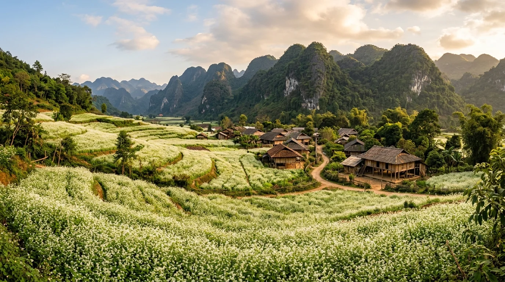
Tháng 11 – 12Mùa Hoa Cải Trắng & Hoa Dã Quỳ
Khi ngọn gió đông đầu mùa ùa về, bạt ngàn các thung lũng bản Pa Phách, rừng thông Bản Áng đồng loạt phủ kín một màu hoa cải trắng muốt tinh khôi, xen kẽ sắc vàng rực của dã quỳ ven sườn đồi đá vôi.
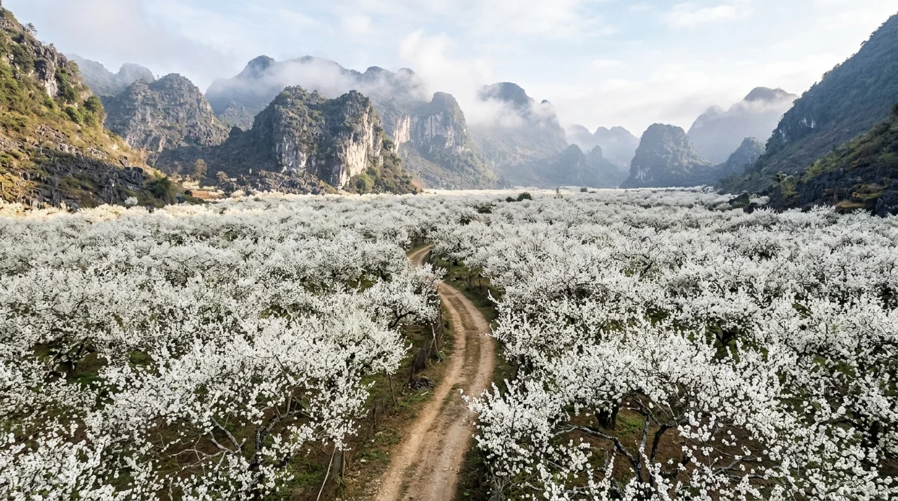
Tháng 12 – 2Mùa Hoa Mận, Hoa Mơ Nở Tuyết Trắng
Thung lũng Nà Ka và Mu Náu hóa thành "xứ sở tuyết trắng" cổ tích khi hàng vạn gốc mận hậu cổ thụ đồng loạt bung nở trắng trời, bao phủ các mái nhà gỗ người H'Mông trong làn sương sớm bồng bềnh.
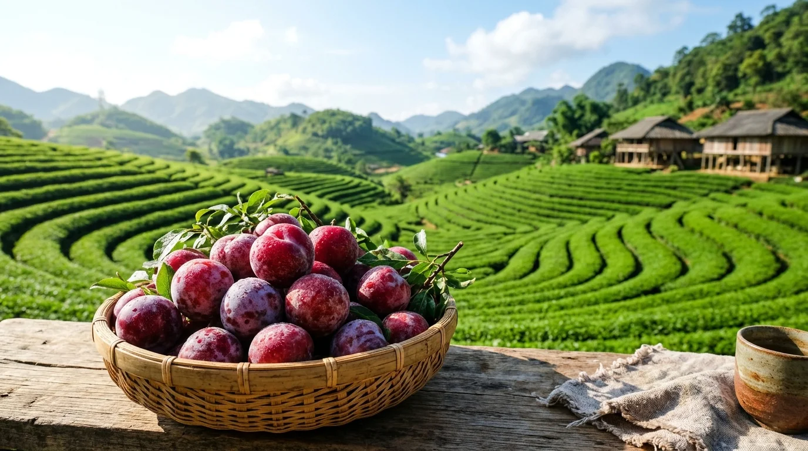
Tháng 4 – 6Mùa Hái Mận Hậu & Đồi Chè Xanh Ngắt
Thời điểm diễn ra Ngày hội hái mận truyền thống. Cả thung lũng đỏ rực những chùm mận hậu chín mọng phủ phấn trắng ngọt lịm, hòa cùng sắc xanh mơn mởn của những lứa búp chè xuân tươi mới.
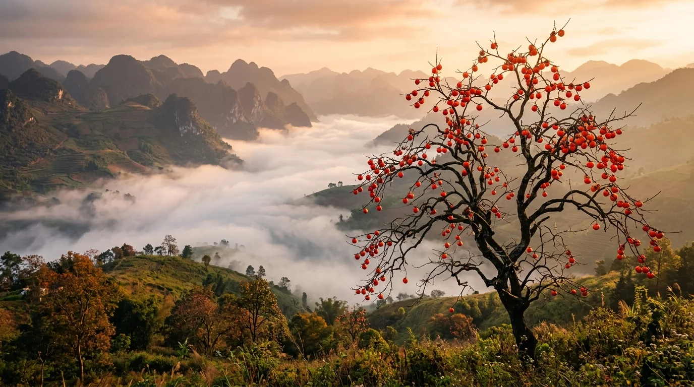
Tháng 9 – 11Mùa Hồng Chín Đỏ & Săn Mây Thảo Nguyên
Những cây hồng cổ thụ trút sạch lá, chỉ còn lại những cành khẳng khiu trĩu nặng hàng trăm quả hồng chín vàng cam rực rỡ trong nắng thu dịu dàng, phía xa là biển mây cuồn cuộn dưới thung lũng sâu.
📸 5. Top 10 Thắng Cảnh Biểu Tượng & Dấu Tích Lịch Sử
(Nhấp vào từng hình ảnh để xem chi tiết ảnh chất lượng cao và câu chuyện truyền tích lịch sử chính thống)

1. Đồi chè Trái Tim (Tân Lập)
Những sóng chè xanh mướt uốn lượn hình trái tim kỳ công giữa thảo nguyên, biểu tượng sức sống và tình yêu của đất Mộc Châu.

2. Thung lũng mận Nà Ka
Xứ sở thần tiên mùa hoa mận trắng nở rộ tinh khôi phủ kín thung lũng dưới chân những nếp nhà gỗ mộc mạc.

3. Rừng thông Bản Áng
Hồ nước trong veo soi bóng hàng ngàn gốc thông mã vĩ xanh rì, điểm cắm trại và dạo chơi thư thái tuyệt đẹp.

4. Thác Dải Yếm & Cầu Kính Tình Yêu
Dòng thác 9 tầng nước đổ trắng xóa mềm mại như dải yếm thiếu nữ vắt qua núi đá giữa rừng nguyên sinh xanh thẳm.

5. Cầu kính Bạch Long (632m)
Cầu kính đi bộ dài nhất thế giới 632m uốn lượn ngoạn mục qua vách đá và thung lũng sâu hun hút đầy thử thách.

6. Đỉnh Pha Luông (Ký Ức Tây Tiến)
Mỏm đá sống ảo kiêu hùng vươn mình ra biển mây cuồn cuộn trên độ cao 2.000m, nơi gắn liền trang sử hào hùng của đoàn binh Tây Tiến.

7. Thác Nàng Tiên (Chiềng Khoa)
Thác nước 3 tầng hoang sơ giữa rừng đại ngàn với hồ nước ngọc bích kỳ ảo gắn liền đền thờ Nàng Bẳng - Nàng Mương.
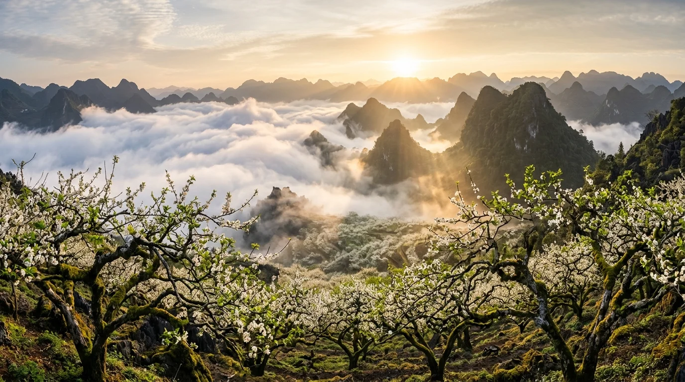
8. Thung lũng & Đỉnh Mu Náu
Rừng mận cổ thụ rêu phong sừng sững trên đỉnh núi 1.500m, nơi bạn ngắm trọn biển mây tràn qua thung lũng thị trấn.

9. Bản Pa Phách & Lóng Luông
Thiên đường hoa cải trắng bạt ngàn trải dài khắp lối đi vào bản người H'Mông mộc mạc dưới chân núi đá kỳ vĩ.
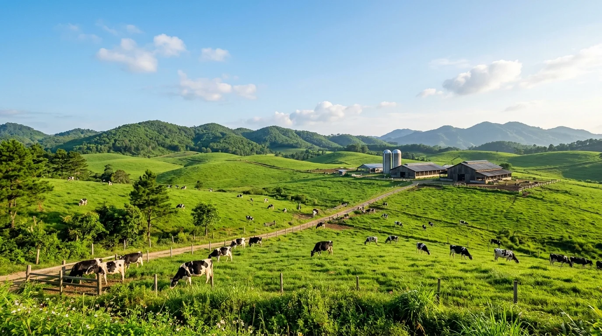
10. Đồng Cỏ & Trang Trại Bò Sữa
Thảo nguyên cỏ xanh mướt ngút tầm mắt với đàn bò sữa Hà Lan thong dong gặm cỏ trong ánh bình minh trong trẻo.
🚗 6. Cẩm Nang Di Chuyển & Cung Đường QL6
Mộc Châu cách Hà Nội chỉ khoảng 190km - 200km theo trục Quốc lộ 6 huyết mạch. Đường sá hiện nay đã được thảm nhựa êm thuận, xe ô tô 4 chỗ đến 45 chỗ lưu thông dễ dàng:
- Xe Limousine / Xe khách chất lượng cao: Xuất phát liên tục từ Hà Nội (bến xe Mỹ Đình, Yên Nghĩa hoặc đón tận nơi nội thành), thời gian di chuyển khoảng 3,5 – 4 tiếng. Giá vé: 220.000 – 300.000 VNĐ/lượt.
- Tự lái ô tô / Phượt xe máy: Lộ trình theo hướng Đại lộ Thăng Long → Cao tốc Hòa Lạc - Hòa Bình → TP. Hòa Bình → Quốc lộ 6 qua Dốc Cun, đèo Cao Phong, đèo Thung Khe (Đèo Đá Trắng) → ngã ba Vân Hồ → Thị trấn Mộc Châu.
- Điểm dừng chân Đèo Thung Khe (Đèo Đá Trắng): Tọa độ nghỉ chân kinh điển trên ranh giới Tân Lạc - Mai Châu với vách đá vôi trắng xóa như tuyết phủ châu Âu, nơi bạn thưởng thức bắp ngô nướng, trứng nướng và ngắm thung lũng Mai Châu trong mây.
🍲 7. Tinh Hoa Ẩm Thực Thảo Nguyên Mộc Châu
Ẩm thực Mộc Châu là sự giao hòa tuyệt vời giữa nguồn sản vật tươi lành của nông trường trù phú và văn hóa ẩm thực đậm đà bản sắc của đồng bào các dân tộc Thái, H'Mông vùng Tây Bắc:
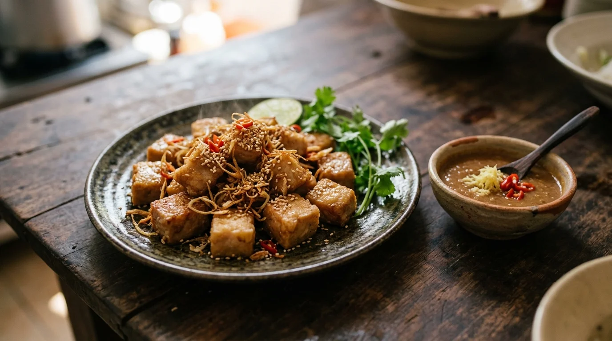
Đặc sản số 1Bê Chao Mộc Châu
Thịt bê sữa non nuôi thả trên đồng cỏ được thái con chì, tẩm ướp sả, gừng băm và gia vị thảo mộc rồi chao ngập trong chảo dầu sôi liu riu. Miếng thịt chín tới lớp bì ngoài vàng giòn sần sật, thớ thịt bên trong mềm ngọt, chấm cùng tương bần gừng đặc sánh thơm nồng khó cưỡng.
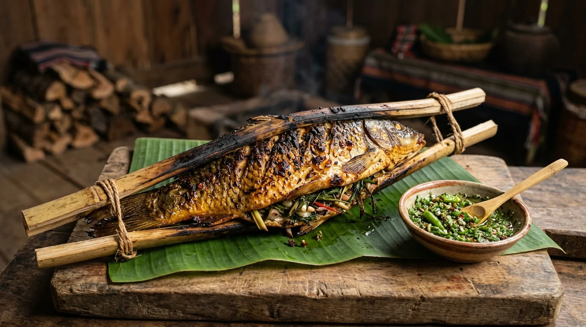
Món ngon người TháiCá Suối Nướng (Pa Pỉnh Tộp)
Cá chép hoặc trôi suối tươi rói được mổ dọc sống lưng, ướp đẫm các loại rau thơm rừng, ớt chỉ thiên, hạt dổi và mắc khén nồng ấm, gập đôi lại kẹp trong thanh tre bánh tẻ rồi nướng trên than hoa đượm. Vỏ ngoài cháy xém giòn rụm, thịt cá trắng ngần ngọt thanh chấm muối chẩm chéo ớt hiểm.
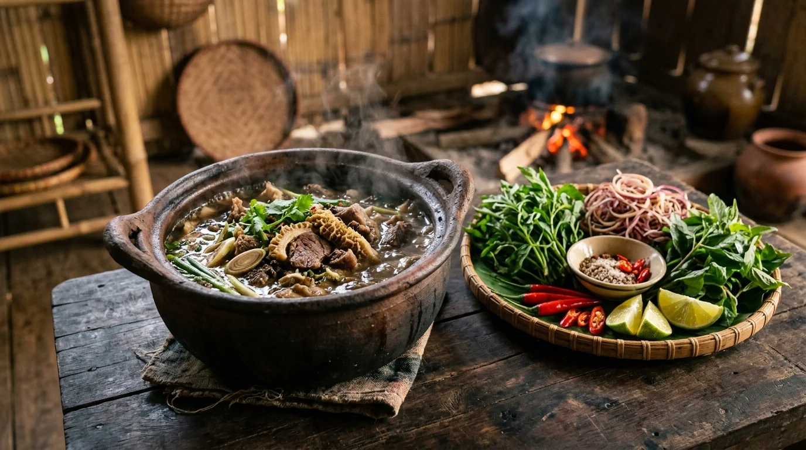
Độc đáo rẻo caoNậm Pịa Mộc Châu
Món ăn truyền thống độc nhất vô nhị của người Thái Mộc Châu dùng để thiết đãi khách quý. Nước pịa non từ ruột non bò hoặc dê được ninh nhừ cùng nội tạng, tiết, sả, mắc khén, lá bưởi và hoa quả thảo mộc. Vị đắng chát ban đầu ở đầu lưỡi nhanh chóng tan biến để lại hậu vị ngọt thanh và ấm bụng trong tiết trời se lạnh.
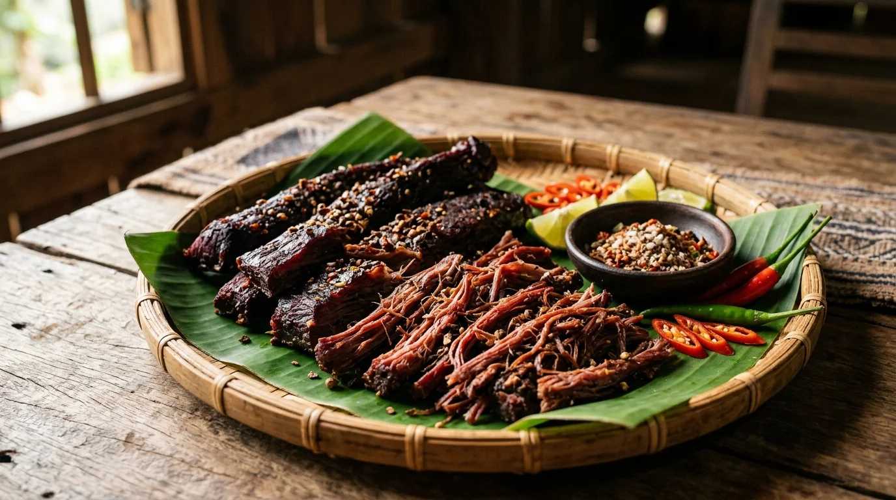
Đặc sản làm quàThịt Trâu Gác Bếp & Lợn Bản Nướng
Những thớ thịt bắp trâu thả đồi tươi ngon được tẩm ướp hạt dổi rừng, mắc khén, ớt khô rồi treo gác bếp hun khói củi củi nhãn nhiều tháng ròng. Khi ăn xé tơi từng sợi thịt màu đỏ sẫm dai ngọt đậm đà, nhâm nhi cùng chén rượu ngô men lá nồng nàn bên bếp lửa bập bùng.
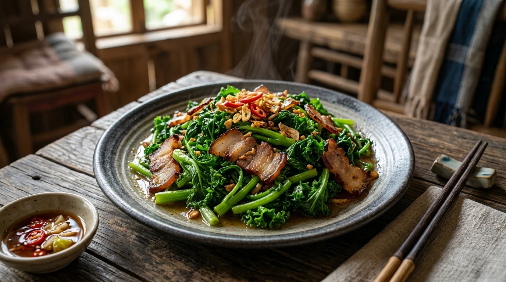
Rau sạch thảo nguyênRau Cải Mèo Xào Thịt Gác Bếp
Giống cải mèo lá xoăn viền răng cưa chỉ mọc và sinh trưởng mạnh mẽ trên đất núi đá vôi sương mù Mộc Châu. Rau được bẻ bằng tay thành từng đoạn ngắn rồi xào nhanh trên lửa lớn cùng thịt lợn hun khói thái mỏng và tỏi ta đập giập. Cọng rau giòn sần sật, vị đắng dịu hòa quyện vị béo ngậy của thịt mỡ bản tạo nên hương vị khó quên.
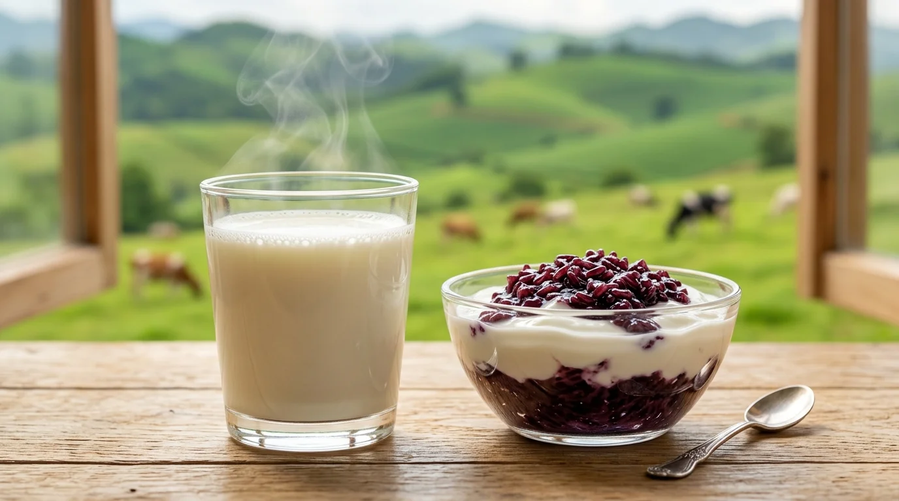
Thương hiệu quốc giaSữa Tươi & Sữa Chua Nếp Cẩm
Được chế biến trực tiếp từ nguồn sữa bò tươi nguyên chất của nông trường, ly sữa tươi nóng hổi béo ngậy với lớp váng sữa vàng sánh là món tráng miệng tuyệt vời vào mỗi sớm mai se lạnh. Kết hợp cùng sữa chua nếp cẩm dẻo thơm, bánh sữa Mộc Châu là món quà ấm áp mang về cho người thân.
💰 8. Bảng Giá Vé Tham Quan & Chi Phí Dự Kiến
| Điểm tham quan / Trải nghiệm | Địa điểm | Giá vé tham khảo |
|---|---|---|
| Cầu kính Bạch Long (Mộc Châu Island) | Xã Mường Sang | 650.000 VNĐ (Người lớn) / 450.000 VNĐ (Trẻ em) |
| Thác Dải Yếm (Vé cổng) | Bản Vặt, Mường Sang | 80.000 VNĐ / người |
| Cầu kính Tình Yêu (Thác Dải Yếm) | Bản Vặt, Mường Sang | 100.000 VNĐ / người |
| Rừng thông Bản Áng | Xã Đông Sang | 80.000 VNĐ (Người lớn) / 30.000 VNĐ (Trẻ em) |
| Thác Nàng Tiên | Bản Nà Chá, Chiềng Khoa | 30.000 VNĐ / người |
| Thung lũng mận Nà Ka (Vào vườn hái mận/hoa) | Tiểu khu Pa Khen | 30.000 – 50.000 VNĐ / người (Tùy mùa) |
| Đồi chè Trái Tim | Xã Tân Lập | Miễn phí vé (Thuê trang phục: 30.000 – 50.000 VNĐ) |
| Đỉnh Pha Luông (Vé kiểm lâm & dẫn đường) | Xã Chiềng Sơn | 50.000 VNĐ / người + Tiền porter dẫn đường |
🧭 9. Gợi Ý Lịch Trình Khám Phá Thảo Nguyên
📅 Lịch trình 2 Ngày 1 Đêm (Lựa chọn lý tưởng cho cuối tuần)
Ngày 1: Hà Nội → Dừng chân Đèo Đá Trắng Thung Khe → Đến Mộc Châu ăn trưa thưởng thức bê chao → Chiều khám phá Đồi chè Trái Tim Tân Lập & check-in Thung lũng mận Nà Ka → Tối dạo phố đêm thị trấn, thưởng thức cá suối nướng Pa Pỉnh Tộp.
Ngày 2: Sáng sớm săn mây ngắm rừng mận cổ thụ Đỉnh Mu Náu hoặc đón bình minh Rừng thông Bản Áng → Thăm Thác Dải Yếm & trải nghiệm Cầu kính Bạch Long (kỷ lục thế giới) → Mua sữa tươi, thịt trâu gác bếp làm quà → Lên xe về lại Hà Nội.